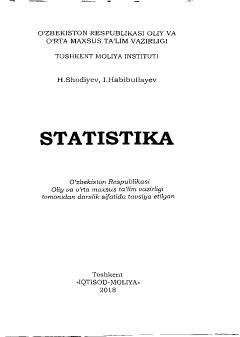

SOliy o'quv yurtlari talabalari uchun statistika fanidan asosiy darslik.
Mazkur darslikda statistikaning nazariy va amaliy asoslari, jumladan statistik kuzatish, variatsion va dispersion tahlil, indekslar, aholi va mehnat bozori statistikasi hamda milliy hisobchilik masalalari keng yoritilgan. Kitobda iqtisodiy-statistik tahlil metodologiyasi aniq misollar yordamida tushuntirib berilgan. Adabiyot oliy o'quv yurtlari talabalari, magistrlar va ilmiy izlanuvchilarga mo'ljallangan.